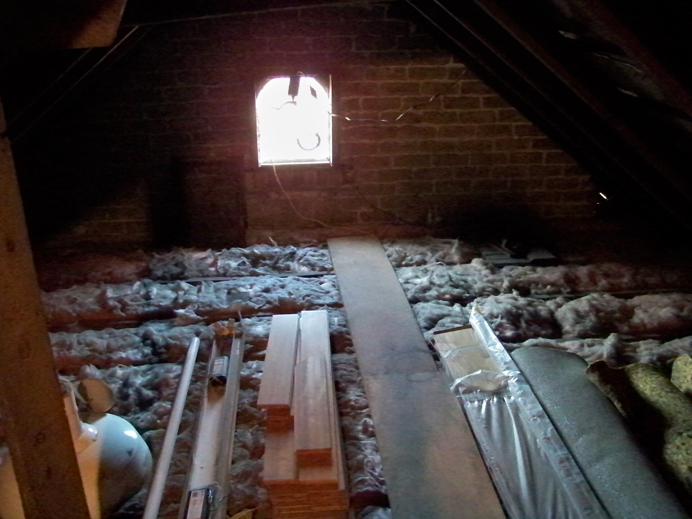

1. Confirm the animals are gone
Verify removal is complete and entry points are sealed, so no new droppings land on cleaned surfaces.
Services
Getting the animal out is only half the job. Droppings, urine-soaked insulation, nesting material and scent trails stay behind, and they carry odour, health concerns and an invitation to the next animal. This page explains what cleanup involves, when insulation has to go, and how the work is priced honestly.
Request an inspection


A raccoon latrine concentrates droppings in one corner. A bat colony spreads guano under the roost, sometimes for years. Squirrels scatter droppings and store food through the insulation. All three soak urine into insulation and timber, and all three leave a scent profile that tells the next animal this space is proven shelter. Vacuuming the visible droppings with a household machine is a mistake: it blows fine particles into the air and through the house. Cleanup is a contained, methodical job.
The assessment sorts the attic into zones. Light scatter near an entry point may need removal of droppings, treatment of the surface and checks of nearby insulation. A latrine or a long-used bat roost usually means insulation in that zone comes out entirely. Timber can often be treated and kept. The zone map drives the quote, which is why honest cleanup prices are given after inspection, not from a photograph of the attic hatch. On bat jobs the same map is the bat guano removal plan, setting out pile by pile what comes out, what is treated in place, and what stays.
Insulation that is soaked, matted with droppings or trampled flat has lost most of its insulating value and holds odour no surface treatment will shift. That material should come out. Insulation with light surface scatter nearby can sometimes stay after the droppings above it are removed and the area is treated, and an honest operator will show you the difference rather than selling a full replacement by default.
Replacement is also the moment to check what the animals hid: chewed wiring, blocked vents and damaged ducting all surface once old insulation is lifted. Fixing those findings during restoration is cheaper than opening the attic twice. New insulation should be blown or laid to the depth your house needs for New York winters, and the restoration note should state what was removed, what went in and where.
Bat guano can carry the fungus linked to histoplasmosis, and raccoon droppings can carry raccoon roundworm eggs. Those are real risks with a clear pattern: they matter most when dry droppings are disturbed and dust is breathed in, or when hands and surfaces are contaminated. That is why cleanup crews wear respirators and gloves, damp down material, and use HEPA-filtered equipment. It is also why large accumulations are a professional job, full stop.
This page gives general information, not medical advice. If you have handled droppings, worked in a contaminated attic, or have symptoms that worry you, consult health professionals or your county health department and follow NYSDOH guidance. For the house itself, the safe sequence is simple: animals out, entry points sealed, contaminated material removed by people with the right equipment, surfaces treated, insulation restored.
Removal on its own rarely ends a wildlife problem in upstate New York. Animals follow scent trails, roof gaps and easy food, and a house that suited one raccoon or squirrel will suit the next one. That is why attic cleanup after wildlife sits inside a wider sequence: inspect the whole roofline and attic, remove the animals that are present, seal every entry point with materials animals cannot chew through, then clean up what was left behind. Skip a step and the odds of a repeat visit climb fast. Homeowners in Ithaca, Binghamton, Poughkeepsie and the other towns we cover see the same pattern each winter, when cold weather pushes animals toward warm attic space between October and March.
A proper inspection for attic cleanup after wildlife starts outside the house, not inside it. The operator walks the roofline, soffits, gable vents, chimney flashing and foundation, looking for gaps of a quarter inch or more, rub marks, droppings and nesting material. Inside the attic, the check covers droppings, trails through insulation, chewed materials and signs of young animals. Findings should be photographed and explained in plain language, with entry points marked on a simple list you keep. If a quote arrives before anyone has looked in the attic, treat it as a guess rather than an estimate.
| Level | Typical signs | Usual work |
|---|---|---|
| Light | Scattered droppings near one entry point | Droppings removed, surface treated, insulation checked |
| Moderate | Latrine corner or small bat roost | Insulation removed in that zone, treatment, replacement |
| Heavy | Long bat occupation, deep guano | Wide insulation removal, full treatment, restoration |
| Odour only | Dead animal or urine soaking | Source found and removed, affected material treated or replaced |
Cleanup is quoted after inspection. The zone map, not a flat rate, sets the price.
Verify removal is complete and entry points are sealed, so no new droppings land on cleaned surfaces.
Mark light, moderate and heavy areas, photograph each zone, and agree what comes out and what can be treated in place.
Damp down, bag and remove droppings, nesting material and contaminated insulation using respirators, gloves and HEPA equipment.
Clean and treat exposed timber and deck surfaces once bulk material is out.
Fit new insulation to the agreed depth and record what was replaced, ready for your house file.
Yes, cleanup is a core part of the work, not an extra. Droppings and nesting material are removed zone by zone, contaminated insulation is bagged and taken out, and exposed surfaces are treated before new insulation goes in. The scope is agreed from a zone map at inspection, so you see exactly which areas are being removed, treated or left alone, and why. An inspection in one of the ten upstate towns we cover confirms the details before any work or price is agreed in writing.
Bat guano can carry the fungus associated with histoplasmosis, and the risk rises when dry droppings are disturbed and dust is inhaled. A few droppings under a roost call for care. Years of accumulation call for professional removal with respirators and HEPA equipment. For personal health questions, consult health professionals or your county health department rather than relying on general website information. If you are unsure, start with an inspection and written findings, then decide on the next step with clear information in hand.
Start only after the bats are excluded and entry points are sealed. Small amounts of droppings can be dampened, collected with gloves and a mask, and bagged. Deep guano or urine-soaked insulation needs professional equipment and should not be dry-swept or vacuumed with a household machine. Bat feces removal at that depth is respirator and HEPA-filter work, quoted from the zone map rather than by the bag. Many homeowners have the assessment done first, then decide which zones, if any, they can safely handle themselves. That approach keeps the work humane, avoids sealing an animal inside, and gives you a record of exactly what was done.
Cleanup is quoted after inspection, because the price follows the zone map: how much insulation is contaminated, how deep guano sits and how tight the attic access is. It sits on top of the canonical removal ranges on this site, inspection $150-$300 and single-animal removal $300-$600. Any operator quoting cleanup sight unseen is guessing, and the guess usually grows once work starts. An inspection in one of the ten upstate towns we cover confirms the details before any work or price is agreed in writing.
Sometimes, for light surface scatter on otherwise sound insulation. Droppings on top can be removed and the surface treated. Insulation that is soaked with urine, matted, or holding a latrine or heavy guano load has lost its structure and its insulating value, and treatment will not restore either. Replacement of the affected zone is the honest recommendation in those cases. If you are unsure, start with an inspection and written findings, then decide on the next step with clear information in hand.
Cleanup removes the smell when it removes the source. Odour lives in droppings, urine-soaked insulation and sometimes a carcass, so those materials have to come out and the surfaces under them treated. Masking sprays and ozone treatments over contaminated material fade within weeks. If a smell survives a proper cleanup, an unfound source, often in a wall void or soffit, is the usual reason. That approach keeps the work humane, avoids sealing an animal inside, and gives you a record of exactly what was done.
A light, single-zone cleanup often takes part of a day. A heavy bat attic with wide insulation removal and replacement runs longer, sometimes over two visits, because material must come out before new insulation goes in. The inspection should give you a time estimate with the quote. Attic size, access and contamination depth are the three factors that move the schedule most. An inspection in one of the ten upstate towns we cover confirms the details before any work or price is agreed in writing.
Usually not. Crews work from the attic hatch with contained equipment, and the living space stays usable. For heavy guano work, keeping people and pets out of rooms directly below the attic while material is moving is a sensible precaution the crew will flag. If anyone in the house has breathing difficulties, mention it at inspection so the plan can allow for it. If you are unsure, start with an inspection and written findings, then decide on the next step with clear information in hand.
They can, and cleanup makes the attic more attractive, not less: fresh insulation in a space that still smells of animals is prime denning material. Sealing belongs before cleanup in the job sequence. That order protects the money you spend on restoration. If a quote offers cleanup without exclusion, ask what stops the next raccoon, squirrel or bat colony from undoing it within a season. That approach keeps the work humane, avoids sealing an animal inside, and gives you a record of exactly what was done.
Contaminated droppings, nesting material and insulation are bagged in the attic, sealed, and removed from the property for disposal as directed for that material. It should never be tipped into household bins open, spread on a garden or burned. Ask the operator at inspection how material from your job will be bagged and where it goes, and expect a straight answer. An inspection in one of the ten upstate towns we cover confirms the details before any work or price is agreed in writing.
Tell us the town, the animal or noise involved, and when it started. An operator covering your town will explain the inspection, the likely next steps and the typical ranges before any work is booked.
Placeholder: call-tracking phone number and form endpoint are added before launch. No phone number is shown or invented in this draft.